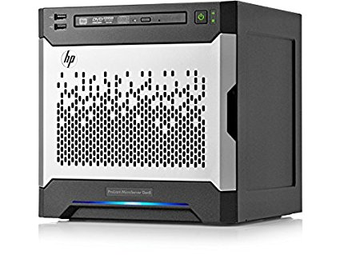
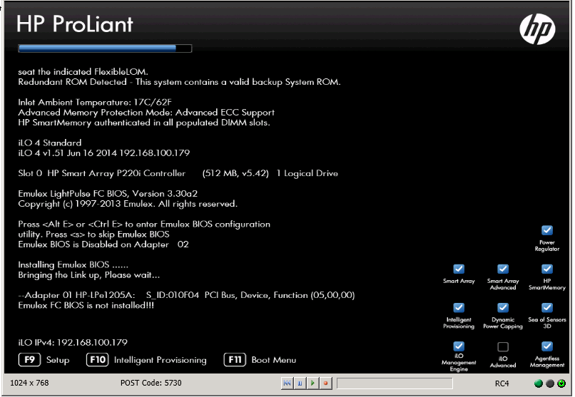
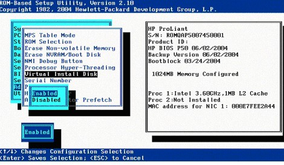
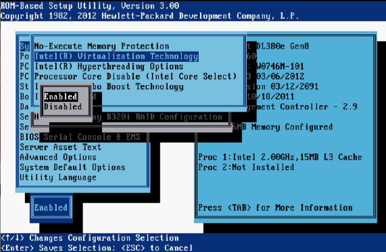
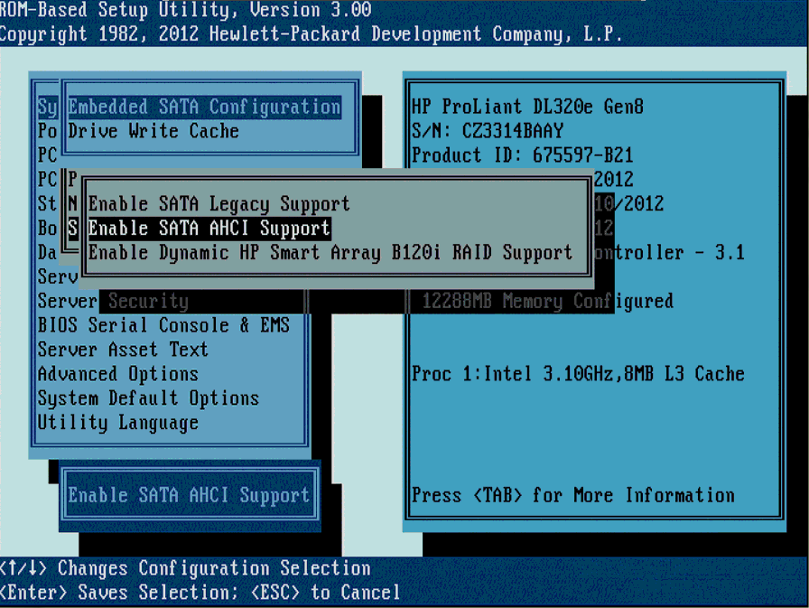
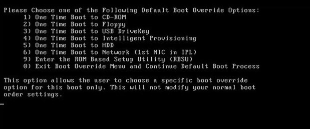

Configuración de Proxmox VE
¿Que necesitamos para instalar el Proxmox?
Lo primero de todo es tener el microservidor, en este caso usamos un HP ProLiant MicroServer
Gen8.

A parte de este, necesitaremos un monitor con entrada VGA. En caso de no disponer de esta,
podremos usar un adaptador de entrada. Tambien necesitaremos un ratón y un teclado para poder
movernos a traves de las opciones que nos da el servidor. Y para poder instalar el sistema
operativo crearemos un USB booteable.
¿Como creamos un USB booteable?
Para crear el USB de este sistema operativo no podemos crearlo con RUFUS o UNetbooting, ya que
estos programas dan errores. Para ello lo que haremos será primero de todo hacernos con un USB
en formato fat32 vacio con al menos un GB de memoria.
Instalacion en Linux:
Mediante la terminal de linux usaremos los siguientes comandos: lsblk- Con este comando
encontraremos el nombre y la ubicacion de nuestro USB.
dd if=proxmox-ve_*.iso of=[Aqui ponemos la direccion del usb que hemos visto que es a traves de
lsblk] bs=1M
Instalacion en Windows:
Nos descargamos Etcher y seguimos sus instrucciones. En caso de que este no funcione usaremos
OSForensics
Configurar MicroServidor para instalacion:
Para empezar conectaremos todos los perifericos al microservidor, el cual estará conectado a
una entrada de red a traves del RJ45.
Una vez encendido, esperaremos a que aparezca la opcion de entrar a la BIOS desde el F9. Pondrá
SETUP.
Una vez dentro de la BIOS, accedemos a AdvancedOptions -> VirtualInstallDisk-> Enabled

Hecho esto, nos dirigiremos desde el menu principal de la BIOS a SystemOptions->
ProcessorOptions->IntelVirtualizationTechnology->Enabled

Asegurarnos tambien que estemos en Legacy Mode.

Seleccionamos el arranque para que arranque de primeras desde el USB.

Seleccionamos la opcion de proxmox e iniciamos el programa de instalacion.